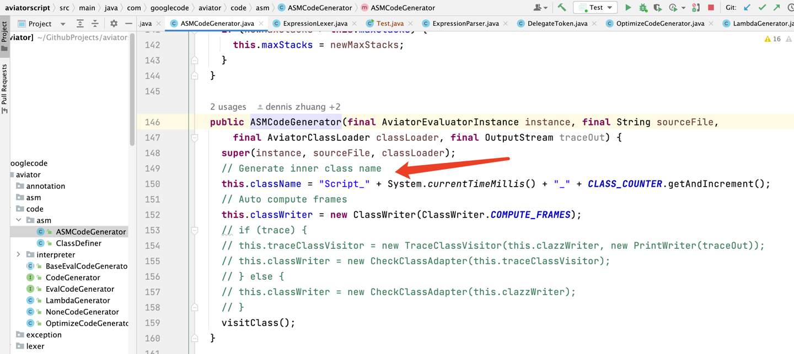
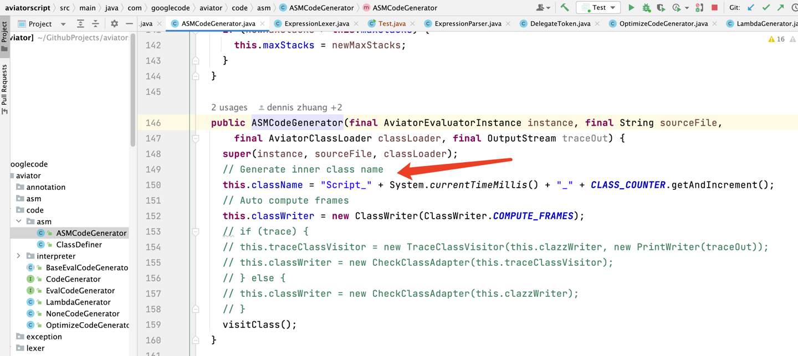

协助同事排查处理了一则aviator使用不当导致元空间内存泄漏的问题，个人觉得是一则很有价值的案例，因此观摩学习一波。
使用aviator不启用表达式缓存的情况下，会分别在编译、解析阶段根据时间戳使用asm动态生成class，生成过多class就会撑爆元空间，也就是内存泄漏。
除此之外，在分析过程中还发现了aviator低版本的另一个泄漏问题，非常适合用来巩固jvm相关知识。
本文结构请参照目录。
背景
报警
起因是12号的时候有个报警，显示发生了OOM，同时携带了metaspace元空间关键字：

看下对应服务元空间监控趋势：
这里可以观察到元空间在一定周期内上涨，同时也有一些无周期规律的上涨趋势。
jvm参数
对应服务使用了jdk 1.8
服务启动参数：
-XX:MetaspaceSize=512m
-XX:MaxMetaspaceSize=512m
分析
前面可以看到元空间 meta space 内存占用呈上涨趋势；
因为元空间存的是类的描述、元信息，本身我们的类基本是固定的，除此之外就是一些框架动态生成的类，但是这部分增长不应该这么快，因此这里很可疑！！！
通过增加jvm 启动参数-XX:+TraceClassLoading -XX:+TraceClassUnloading，可以查看类加载的情况，比如加载了多少类，同时可以看类加载的变化趋势。
在日志中捕捉到了 Script_前缀 这种可疑的类（生成了好多）。
如图：
通过类能定位到对应的三方库：
|
|
可以看到，这里加载了很多前缀相同的类。加载的类多，元空间中类的元信息也暴增，同时堆内对象也暴增，因此服务内存紧张，触发fullgc，当gc后依然生成超多类时，jvm撑不住了，触发OOM。
问题基本定位到了，接下来就需要研究下问题在aviator是如何发生的，以及怎么解决问题。
Script_前缀类 加载很多的原因，我们需要一步步debug分析下源码：
问题1：未使用缓存，每次调用均生成新代码
业务代码中只有一个地方调用了aviaotr，因此入口很好找，定位到调用aviator的位置：
compile继续往里走：
innerCompile负责编译、解析新的表达式，如果这一步复用缓存，则从缓存中取前序已经处理好的表达式。
可以看到这里一共做了：
- 词法分析；
- 动态代码生成；
- 
这里会动态生成
Script_前缀的脚本类；
- 
这里会动态生成
- 表达式解析；
-
这里会动态生成
Lambda_前缀的匿名内部类；
-
这里会动态生成
一直debug会到executeModule这一步：
可以看到这里维护了lambda类的一些描述信息，具体生成过程可参看下方折叠内容，总结下就是先生成Script_ 前缀的脚本类，然后脚本类中动态生成Lambda_ 前缀的匿名内部类，这些类正常情况下在后面不用的时候需要释放掉对应内存。
具体的调用链路折叠在此处，需要可以细看：
Object executeDirectly(final Map<String, Object> env)
LambdaFunction newLambda(final Env env, final String name)
LambdaFunction newInstance(final Env env)
上述路径需在 最后一步断点，不断回滚，才能找到进入路径。因为真实进入的代码是生成的Script_调用的。
通过断点可以观察到，使用缓存后，这里使用的 LambdaFuntion 是同一个，不会重复生成新的类。（defineClass）
小结： 这里我们已经可以得出
aviator在不使用缓存的情况下，每次调用都会生成新的类。 在编译、解析表达式的过程中，会使用asm生成代码，在动态代码生成阶段生成Script_前缀的脚本类，在表达式解析阶段生成Lambda_前缀的匿名内部类； 如果不使用缓存，则每次调用都生成新的代码；
问题2：ThreadLocal缓存泄漏
这里我debug使用的aviator源码版本是5.3.3。
低于5.3.3版本，还有一个ThreadLocal强引用无法回收的问题，作者已经在 issues/494 中进行了修复。
使用如下脚本压测5.2.7版本：
|
|
jvm最终会报metaspace不足导致的OOM：
com.googlecode.aviator.exception.CompileExpressionErrorException: define class error
Caused by: java.lang.OutOfMemoryError: Metaspace
对应元空间趋势：
可以看到频繁调用的时候，元空间内存占用会持续上涨。
这个问题的原因，我们可以主要关注ThreadLocal缓存 LambdaFunction的地方：
ThreadLocal<LambdaFunction> 调整为了ThreadLocal<Reference<LambdaFunction>>，作者意图：当jvm内存紧张时，可回收 ThreadLocal 中持有的LambdaFunction。
通过断点可以看到，此处的 fnLocal.get() 仅在 newInstance 中调用，当发生了 soft reference 在内存紧张的时候被回收时，此处就会进入下方 new LambdaFunction 的流程，即缓存中没有就创建一个新的对象。
我们再使用5.3.3新版本进行压测：
可以对比新旧版本的元空间增长趋势，内存泄漏的问题在新版本中解决了。
总结
综上，Script_前缀的类加载过多的原因是，业务代码中调用aviator解析表达式没有使用缓存。
最后，彻底解决aviator内存泄漏的坑需要两步走：
- 预编译阶段使用缓存，复用重复的表达式；
- 升级
aviator版本，这样jvm垃圾回收器在内存不够的情况下才能回收编译解析阶段生成的lambda匿名类实例；
由于对应服务中大部分表达式是一样的，因此我们主要通过使用预编译缓存来解决此次问题，修复问题后我们的服务元空间的趋势：
可以看到持续几天，元空间基本无增长。问题解决！！！
名词解释
| 名词 | 解释 |
|---|---|
aviator |
Aviator是一种高性能、轻量级的Java语言实现的表达式求值引擎，用于动态求值表达式。它的实现思路与其他轻量级的求值器不同，不是通过解释的方式运行，而是将表达式直接编译成Java字节码，交给JVM执行。Aviator的定位是介于重量级脚本语言（如Groovy）和轻量级表达式引擎（如IKExpression）之间。 |
asm |
ASM（全称为"Abstract Syntax Tree Manipulation"）是一个用于在Java字节码层面进行操作和转换的框架。它提供了一组API，可以读取、修改和生成Java字节码。 |
meta space 元空间 |
元空间是jdk1.8引入的一块内存区域，使用系统本地内存，用于存储类的元信息，属于堆外内存 |
Hard (Strong) References |
我们常规用到的引用类型。 |
Weak References |
垃圾回收时，不管对象是否可达，都回收使用 weak 引用标识的对象，同时不阻止垃圾回收器回收被引用的对象。当我们需要缓存一些对象，但又不希望这些对象影响垃圾回收的时候，可以使用Weak Reference来实现。当对象的强引用被清除后，垃圾回收器会自动回收这些被缓存的对象。 |
Soft References |
jvm内存不够用时，垃圾回收时回收 soft 引用标识的对象。使用场景类似weak reference，区别点仅限于垃圾回收的时机，soft reference仅在应用内存紧张的时候回收。 |
Phantom References |
phantom引用标识的对象在触发垃圾回收后，会进入一个队列，只有完成我们出队的逻辑，垃圾对象才会被回收。常用于一些触发回收后的逻辑控制，比如记录回收、排查内存泄漏。 |